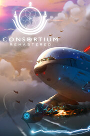

CONSORTIUM Remastered
CONSORTIUM Remastered
Detalles
|  | |
| Tiempo de juego | No Jugado |
| Última actividad | Nunca |
| Añadido | 22/05/2024 10:41:47 |
| Modificado | 22/05/2024 10:42:09 |
| Estado de finalización | Not Played |
| Librería | Steam |
| Fuente | Steam |
| Plataforma | PC (Windows) |
| Fecha de lanzamiento | 21/05/2024 |
| Puntuación de la Comunidad | |
| Puntuación de la Crítica | |
| Puntuación de usuario | |
| Género | Adventure RPG Simulation |
| Desarrollador | Interdimensional Games Inc |
| Editor | Interdimensional Games Inc |
| Característica | Achievements Cloud Saves Family Sharing Full Controller Support Includes Level Editor Leaderboards Single Player |
| Enlaces | Punto de encuentro Discusiones Guías Noticias Página de la tienda PCGamingWiki Logros |
| Tag | 3D Action-Adventure choices-matter conversation First-Person Immersive immersive-sim Investigation Level Editor Mystery Narrative Nonlinear Sci-fi Shooter Simulation Stealth Story Rich Stylized Voice Control Well-Written |
Descripción
NOTE: There is a full VR version of this game which includes CONSORTIUM Remastered. https://store.steampowered.com/app/1428880/CONSORTIUM_VR/ Saved games are 100% transferable between VR and non-VR.
As Consortium Bishop Six, players assume the role of an investigator tasked with solving a mysterious murder, unveiling concealed conspiracies, and skillfully navigating interpersonal relationships among the diverse crew. Consortium boasts a highly interactive narrative, empowering players to make choices that influence the story's trajectory. With its innovative branching dialogue system, an immersive storyline, and a richly detailed game world, Consortium offers players a unique and engaging experience that explores the consequences of their decisions and the nature of trust and loyalty.

Welcome to the Consortium.
As Consortium Bishop Six, players assume the role of an investigator tasked with solving a mysterious murder, unveiling concealed conspiracies, and skillfully navigating interpersonal relationships among the diverse crew. Consortium boasts a highly interactive narrative, empowering players to make choices that influence the story's trajectory. With its innovative branching dialogue system, an immersive storyline, and a richly detailed game world, Consortium offers players a unique and engaging experience that explores the consequences of their decisions and the nature of trust and loyalty.
- Introducing V.O.I.C.E.: Choose to use your own voice—or not—to interact with twenty fully realized characters aboard the Consortium Command vessel, C-3800-D “Zenlil.”

- Navigate a nuanced murder mystery in a deeply interactive and replayable 6-10 hour campaign. Choose diplomacy without ever drawing a weapon, or take a more aggressive route when you can, ultimately shaping the public’s perception of you. What kind of Bishop will you be? This chart outlines one possible path among many one can take through the story.

- Immerse yourself into a deeply realized bright future where many of humanity's problems have been solved, yet shadows linger beneath the surface. Access an in-world Information Console containing ~250 documents (news articles, blogs, mission reports and more), along with ~170 AI-generated images.

- Control an array of weapons, protective gear, medical equipment and more.
- Craving more FPS action? Explore and play many different gameplay scenarios within the Virtual Trainer (VT) and even make your own VT levels with our VT level editor! (Note: mouse/keyboard only). Share your levels with the world with built-in modding support.

What Makes This A Remaster?
- Full port to a modern game engine allowed for substantial bug fixes, graphics and performance improvements.
- Redesigned the entire user interface system from the ground up.
- A completely new ending after years of feedback and hindsight, including a newly recorded conversation with the Consortium King.
- Months of polish to choreography and dialogue options while integrating V.O.I.C.E. (see above)
- Complete remake of the “Zenlil Defence Minigame”
- Overhaul of the Virtual Trainer + several more levels to explore, integrated mod support and a leaderboard system.
- Multiple editing/polish passes on all documents inside the Information Console (including nearly 100 new ones!) + ~170 AI-generated images.
- Additional languages (German and French to start with).
Welcome to the Consortium.